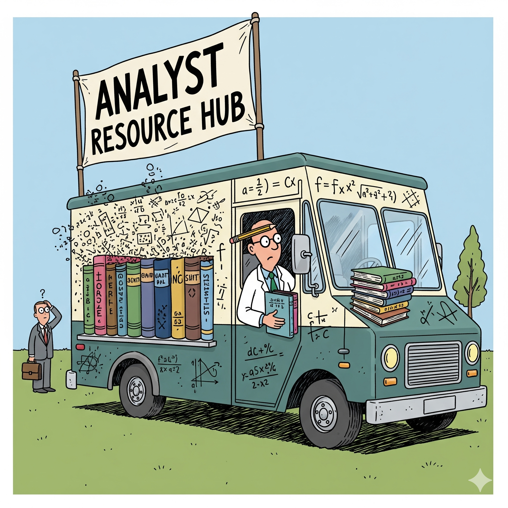

Analyst Resource Hub
A curated, modular knowledge base of checklists, decision cards, guidebooks, and reusable scripts across Python, SQL, and analytics workflows. Originally built in Obsidian and published for quick, skimmable reference.